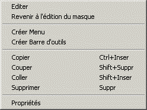

Editer : Edite la ressource sélectionnée.
Revenir à l’édition du masque : Revient à l’édition du masque.
Créer Menu : Crée un nouveau menu.
Créer Barre d’outils : Crée une nouvelle barre d’outils.
Copier : Copie la sélection dans le presse-papiers.
Couper : Détruit la sélection avec recopie dans le presse-papiers.
Coller : Insère le contenu du presse-papiers.
Supprimer : Détruit la sélection sans recopie dans le presse-papiers.
Propriétés : Se place dans la fenêtre des propriétés de la ressource sélectionnée.